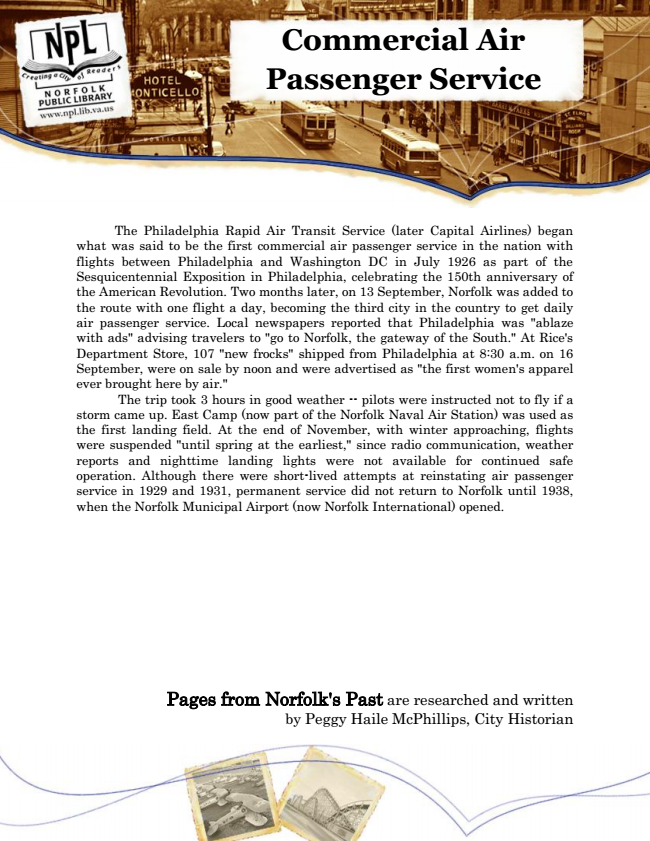

Commercial Air Passenger Service
The Philadelphia Rapid Air Transit Service (later Capital Airlines) began what was said to be the first commercial air passenger service in the nation with flights between Philadelphia and Washington DC in July 1926 as part of the Sesquicentennial Exposition in Philadelphia, celebrating the 150th anniversary of the American Revolution. Two months later, on 13 September, Norfolk was added to the route with one flight a day, becoming the third city in the country to get daily air passenger service. Local newspapers reported that Philadelphia was "ablaze with ads" advising travelers to "go to Norfolk, the gateway of the South." At Rice's Department Store, 107 "new frocks" shipped from Philadelphia at 8:30 a.m. on 16 September, were on sale by noon and were advertised as "the first women's apparel ever brought here by air."
The trip took 3 hours in good weather -- pilots were instructed not to fly if a storm came up. East Camp (now part of the Norfolk Naval Air Station) was used as the first landing field. At the end of November, with winter approaching, flights were suspended "until spring at the earliest," since radio communication, weather reports and nighttime landing lights were not available for continued safe operation. Although there were short-lived attempts at reinstating air passenger service in 1929 and 1931, permanent service did not return to Norfolk until 1938, when the Norfolk Municipal Airport (now Norfolk International) opened.
Pages from Norfolk's Past are researched and written by Peggy Haile McPhillips, City Historian